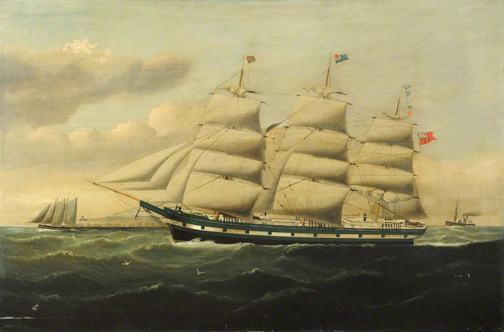
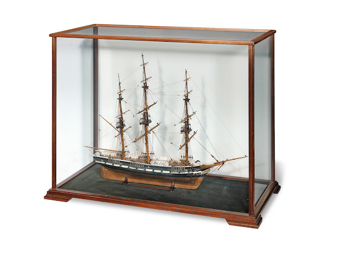

H.M.S. Eurydice, Original Commission#
In 1843, various newspaper reports started appearing announcing the upcoming launch the Eurydice, a 26 gun frigate based on a design by Admiral the Hon. George Elliot.
Admiral the Hon. George Elliot
https://en.wikipedia.org/wiki/George_Elliot_(Royal_Navy_officer,_born_1784)

Fig. 1 William Howard Yorke - HMS ‘Eurydice’ at Sea - RMG, signed ‘W Yorke Lpool 1871’.#
Why 278 men for a frigate
H.M.S. Eurydice was officially launched by one of his daughters, and the ship was commissioned by his eldest son, Captain George Elliot.
Captain George Elliot
https://en.wikipedia.org/wiki/George_Elliot_(Royal_Navy_officer,_born_1813)
Great ships - the frigates
Launch of H.M.S. Eurydice#
Several reports provided the dimensions of the vessel, and commented on her likely turn of speed.
[The Eurydice, 26] - Saturday, April 29th, 1843
Naval & Military Gazette and Weekly Chronicle of the United Service, 1843-04-29, p. 3
The Eurydice, 26, building at Portsmouth upon the plan laid down by Admiral Elliot, will be launched next month. She is constructed on the draught of the Vestal, with an increase of length and a decrease of beam, and the reduction of the angle of the floor, which will reduce her draught of water about 18 inches. This vessel is extremely clean abaft and forward, and there is no doubt she will have great velocity ; but, in all probability, she will prove very wet.

Fig. 2 https://www.bonhams.com/auction/27248/lot/13/a-model-of-the-frigate-hms-eurydice-40in-x-195in-x-315in-102cm-x-50cm-x-80cm/ Bonhams Auctioneers A Model of the Frigate HMS ‘Eurydice’, English, 40in x 19.5in x 31.5in (102cm x 50cm x 80cm) THE MARINE SALE 27 April 2022, 14:00 BST London, Knightsbridge £800 - £1,200#
The Portsmouth, Portsea and Gosport Herald, PORTSMOUTH, MAY 20. - Saturday, May 20th, 1843
Hampshire Advertiser, 1843-05-20, p. 3
The Eurydice, 26 guns, built according to the plan of Rear Admiral the Hon. George Elliot, was launched on Tuesday. The ceremony of naming her was performed by a daughter of the gallant Admiral. A numerous assemblage of persons had collected, and a few minutes before high-water she left her semi-aerial position for a more natural and graceful one upon the surface of the element over which she is hereafter to move. The following are her principal dimensions [Feet. Inches.]: —
Length between the perpendiculars . . 141 2
Keel for tonnage ….116 1 1/2
Breadth extreme .. .. 38 10
Breadth for tonnage … . 38 4
Depth in hold .. .. 8 9
908 tons.
She is to be taken forthwith into dock to be coppered, and to be got ready for the pendant ; and it is expected she will be commissioned in a few days. From her appearance there is every probability of her proving a fast sailer.
PORTSMOUTH, MAY 23 (from our private correspondent) - Wednesday, May 24th, 1843
London Evening Standard, 1843-05-24, p. 3
…
The Eurydice, 20, recently launched from this yard, and built on the plan of Rear Admiral George Elliot, is ordered to be forthwith fitted for commission ; she was coppered yesterday, and will be taken out of dock on Thursday next.
…
But even as The Eurydice was launched, it looked as if the days of sail were numbered:
Portsmouth, May 25 - Saturday, May 27th, 1843
West Kent Guardian, 1843-05-27, p. 8
…
No other vessel is to be built upon the slip from which the Eurydice was recently launched, as it forms part of the yard which is to be converted into a basin here for war steamers.
…
The Eurydice, 26, has been commissioned by Capt. Elliot, a son of the gallant Admiral, upon whose lines she has been built. She will be fitted out with despatch, to test her qualities. - Saturday, July 1st, 1843
Hampshire Advertiser, 1843-07-01, p. 3
Portsmouth, July 13. - Saturday, July 15th, 1843
West Kent Guardian, 1843-07-15, p. 8
… the Eurydice 26 just launched here and built by Admiral Elliot, whose son has commissioned her ; …
Maiden Voyage, October, 1843#
With sea trials ongoing, a possible destination for her first voyage was described:
Portsmouth, Sept. 23 - Saturday, September 23rd, 1843
Hampshire Advertiser, 1843-09-23, p. 3
It is determined that the Eurydice, 26, Captain Elliott, goes to the East Indies and China, after the termination of her trial cruises with the Warspite, 50, and other ships.
However, it seems there was a miscommunication in that report of the destination of the Eurydice on her first voyage, or the destination was changed, for she was actually to sail for the West Indies.
Naval Intelligence (From our Correspondent) - Monday, October 2nd, 1843
Morning Post, 1843-10-02, p. 3
The Eurydice, 26, Captain Elliot, will sail to-morrow for Plymouth, whence she will take her departure for the West Indies, and join the fleet under the command of Vice-Admiral Sir C. Adams. She will embark two subalterns of the Royal Marines at Plymouth, for a passage to join the Pique and Spartan, in the place of Lieutenants Davies and Snowe, invalided from those ships.
Ships at Spithead.— The Warspite and Eurydice.
PORTSMOUTH, SATURDAY, SEPTEMBER 30, 1843. - Monday, October 2nd, 1843
Hampshire Telegraph, 1843-10-02, p. 4
The Eurydice, 26, Captain G. Elliot, sailed this morning tor the West India Station, calling at Plymouth. She will convey orders for a small frigate — most probably the Spartan-to go to the Mediterranean, in the same manner as the Inconstant 36, sends the Pique, 36, to the same station ; and we understand all the vessles on the West India Station, are to be shifted to other quarter at the end of eighteen months. The Eurydice answers delightfully, and beat the Warspite in every point of sailing in the late cruise.